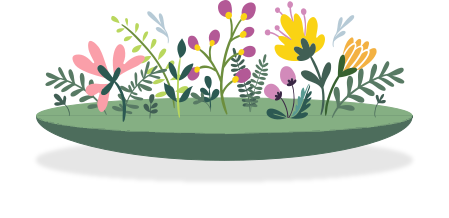

TASTE THE WILD SIDE
VILD MAD is a tool that helps you find wild ingredients in nature, whether you're an expert or a beginner. Learn to forage in Danish natural habitats and find information about more than 100 different wild ingredients.
VILD MAD is a tool that helps you find wild ingredients in nature, whether you're an expert or a beginner. Learn to forage in Danish natural habitats and find information about more than 100 different wild ingredients.
Foraging is like embarking on a tasty treasure hunt in nature. Instead of heading to the store, you explore the outdoors, keeping an eye out for delicious treats growing naturally. Picture finding wild berries, nuts, or even mushrooms hidden in the nooks and crannies of the wild landscape. It's like a food adventure where you get to discover and enjoy the flavors of the great outdoors!
Let nature guide your culinary creativity, making each dish a celebration of the rich flavors found in the great outdoors!